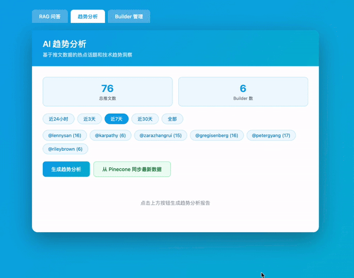
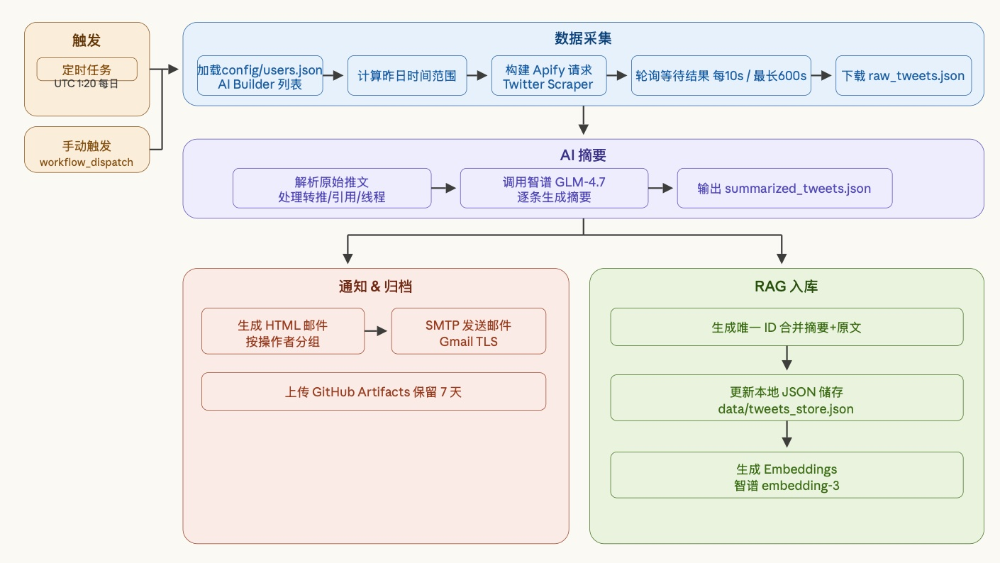
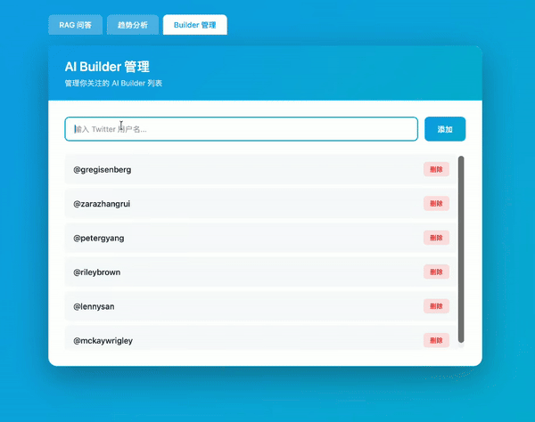
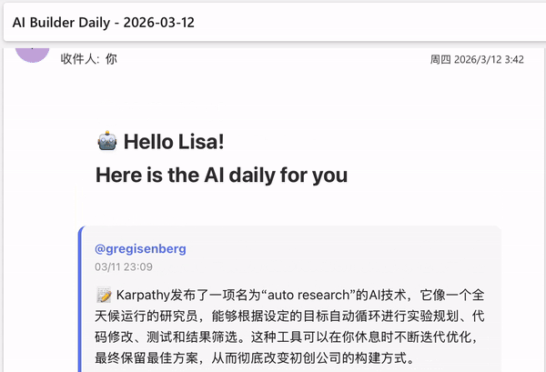
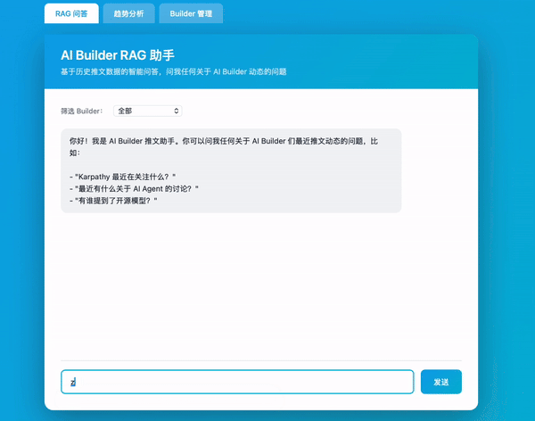
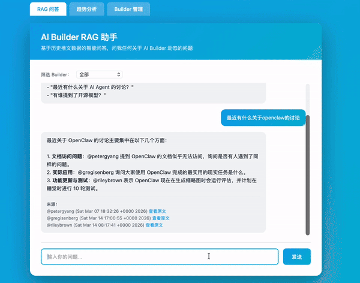

05 — TREND ANALYSIS
趋势分析
基于历史资讯数据，自动识别 AI 领域的热点趋势与话题变化。


从数据中看见趋势
支持单个 Builder 和全部 Builder 两种维度的趋势分析，可按近24小时、近3天、近7天、近30天等时间范围筛选，自动识别热度上升的话题、技术方向和行业动态。
一个自动化的 AI 行业资讯聚合系统——从多源采集、AI 摘要到每日推送， 覆盖资讯追踪、RAG 问答、趋势分析全链路。
从信息采集到最终推送的完整自动化链路，展示系统如何将分散的 AI 资讯转化为结构化的每日简报。

系统每日自动执行：多源信息采集 → AI 智能摘要与分类 → 内容去重编排 → 定时邮件推送。同时支持 RAG 检索问答和趋势分析，构建一个完整的 AI 资讯知识系统。
以结构化方式管理每日采集的资讯条目，支持筛选、编辑和状态管理。

每条资讯都是一个可管理的"Builder条目"，支持分类标签、优先级排序和发布状态追踪。从采集到入库再到推送，每一步都可追溯、可回溯。
系统每日自动生成并推送一封精选 AI 资讯简报邮件。

每天定时发送到邮箱的 AI 日报，包含当日精选资讯的摘要、分类和原文链接。无需主动查找，打开邮件即可掌握 AI 领域最新动态。
基于已采集的资讯库进行检索增强问答，每个回答都附带原始来源引用。


基于采集入库的资讯构建向量知识库，支持自然语言提问。系统通过 RAG 检索相关文档片段生成回答，每条回答都标注来源文章，支持点击跳转原文，确保信息可验证。
基于历史资讯数据，自动识别 AI 领域的热点趋势与话题变化。

支持单个 Builder 和全部 Builder 两种维度的趋势分析，可按近24小时、近3天、近7天、近30天等时间范围筛选，自动识别热度上升的话题、技术方向和行业动态。